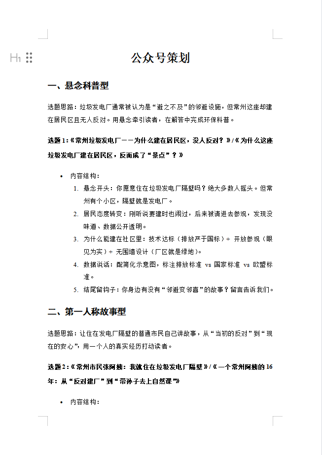
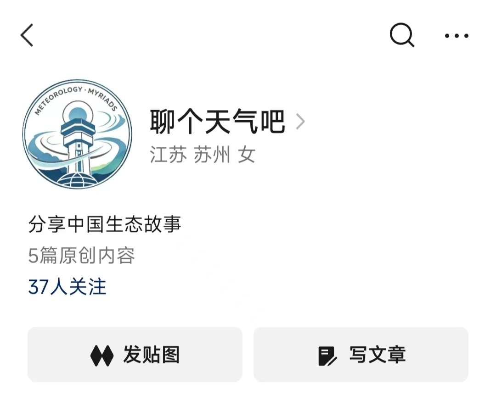
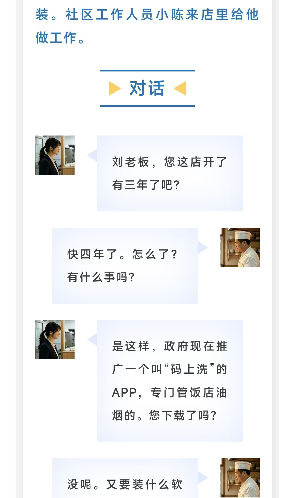
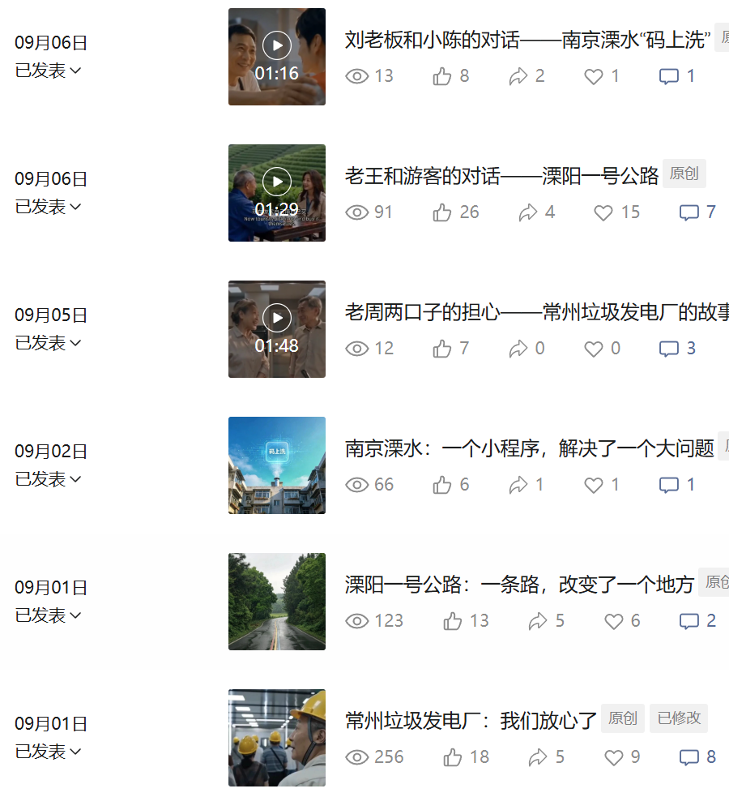
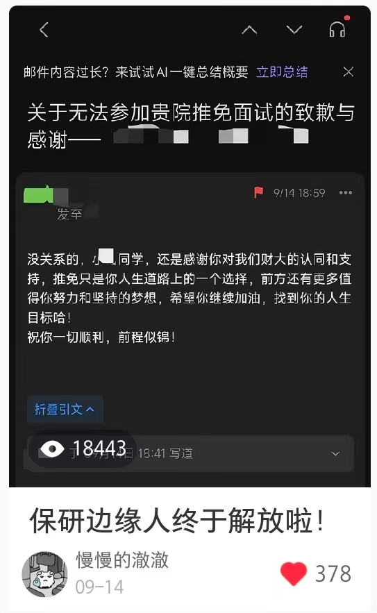
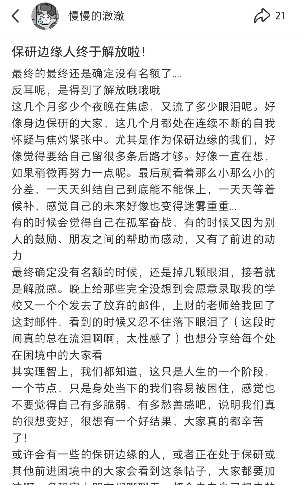
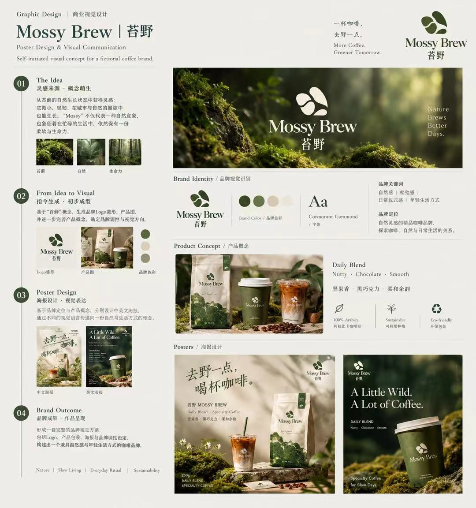

03 / Content Practice
From Idea to Execution
Alongside commercial case studies, I run small-scale content experiments — to keep my own hands on the craft, not just analyse it.
Independent Project
Topic planning document: columns & content structure
Account homepage
Article layout: dialogue-style storytelling
Published posts with per-post metrics
聊个天气吧 · Let's Talk Weather
An environmental-content WeChat public account built from 0 to 1 — making environmental and urban topics more accessible to Chinese-language learners.
Content system: Environmental Information · City / Everyday Observation
Execution: 5 days · 6 posts · 600+ reads · 37 new followers
My role: Research → Planning → Writing → Visual Design → Publishing → Review
Takeaway: Shifted from "what do I want to write?" to "what information structure does the audience need?"






Real-platform Experiment
Xiaohongshu Experiment
Testing different topics and content expressions on a real social platform — using an actual account, with real screenshots.
Performance: 18,443 views · 378 likes · 63 comments · 21 shares
Process: Signal → Audience Need → Content Angle → Performance → Review
Note: Real account data and content screenshots; no simulated metrics.

Visual Exploration
Mossy Brew
A small visual experiment exploring visual systems, brand atmosphere and AI-assisted creation. The point is not to simulate a commercial client project, but to explore:
Visual Positioning
Brand Atmosphere
Image Generation
Content Composition & Storytelling